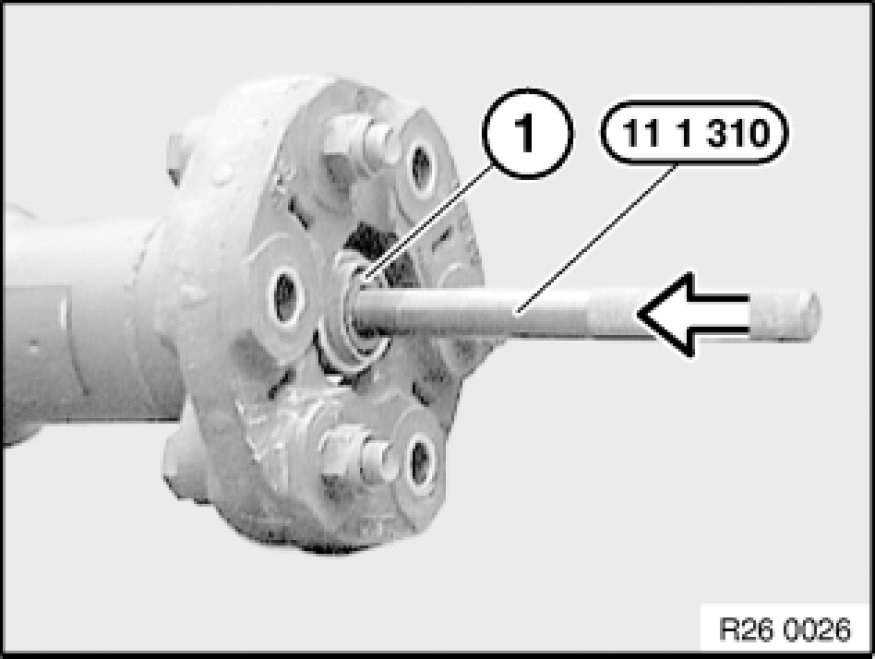
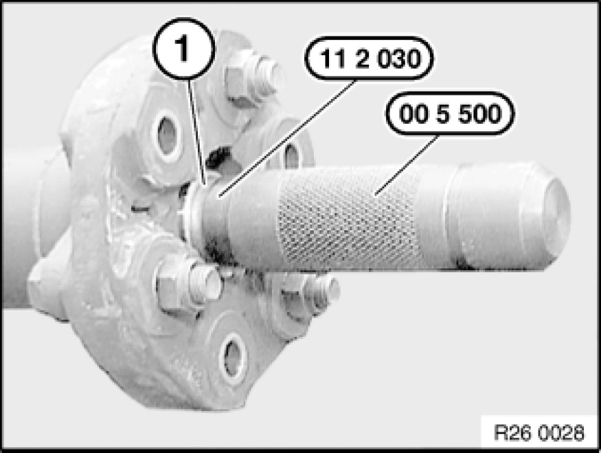
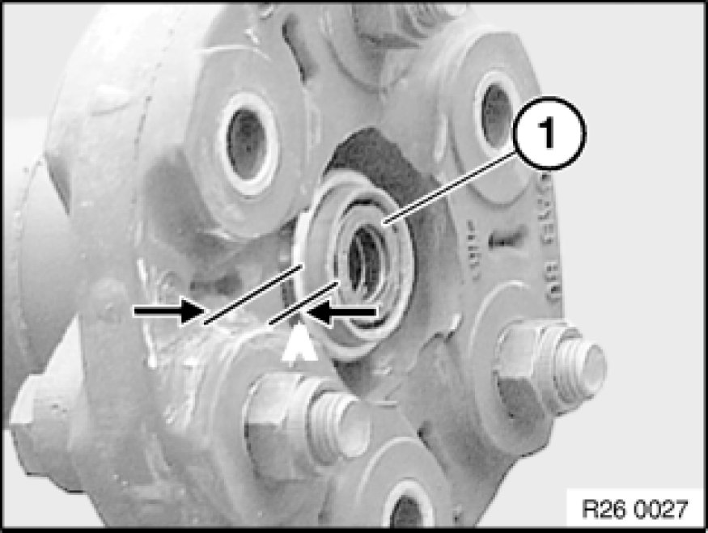

Removing and Installing/Replacing Front Centering Mount for Propeller Shaft
26 11 090 - Removing and installing/replacing front centering mount for propeller shaft

Special tools required:
- 00 5 500 00 5 500 Handle for Drifts
- 11 1 310
- 11 2 030

Necessary preliminary tasks:
- Remove propeller shaft. Removing and Installing Propeller Shaft (Cardan Universal Joint) Completely

Completely fill centering bore (1) with viscous grease.
Drive special tool 11 1 310 with a plastic hammer into centering bore.
The centering mount (1) is forced out of the propeller shaft by the pressure on the grease filling.
If necessary, top up grease repeatedly.
Note:
To drive out the mount, you can also fill the centering bore with water instead of grease.

Installation:
Remove grease/water from mount bore.
Drive in centering mount (1) with special tools 11 2 030 and 00 5 500 00 5 500 Handle for Drifts into propeller shaft (observe protrusion).
Grease centering mount.
- Grease: BMW Service Operating Fluids.

Installation Note:
Observe protrusion A = 4+2mm of centering (1).